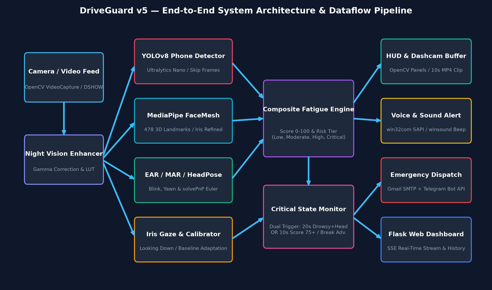

DRIVER SAFETY SYSTEM v5
DRIVEGUARD
Real-time AI-powered driver monitoring
Python · OpenCV · MediaPipe · YOLOv8 · Flask

Webcam frame → OpenCV VideoCapture
Gamma correction & LUT for low light
MediaPipe FaceMesh · 478 3D landmarks
EAR (eyes) · MAR (mouth) · solvePnP head pose
YOLOv8 nano · phone at conf ≥ 70%
ADAPTIVE THRESHOLDS · EVERY 15 FRAMES
Night / Low-light Mode
DAY
Brightness> 100
EAR0.25
MAR0.65
DUSK
Brightness60–100
EAR0.22
MAR0.60
NIGHT
Brightness< 60
EAR0.20
MAR0.55
detectors/fatigue_score.py
Fatigue Score 0–100
LOW <25
MODERATE <50
HIGH <75
CRITICAL 75+
safety/critical_state_monitor.py
"STOP VEHICLE NOW!"
CONDITION A
Drowsy + head tilt, sustained 20 s
OR
CONDITION B
Fatigue score 75+ for 10 s
Rest placesOpenStreetMap · Overpass, 5 km
GmailSMTP + Maps link
TelegramBot API message
FLASK + SSE
Live dashboard at 127.0.0.1:5000
SESSION REPORTS
Per-frame + summary CSV
reports/sessions/*_frames.csvHISTORY
Past sessions with 7 graph types